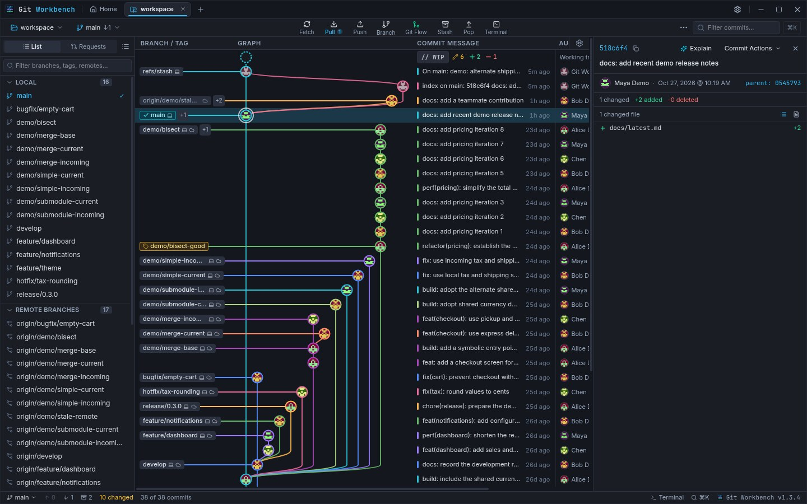
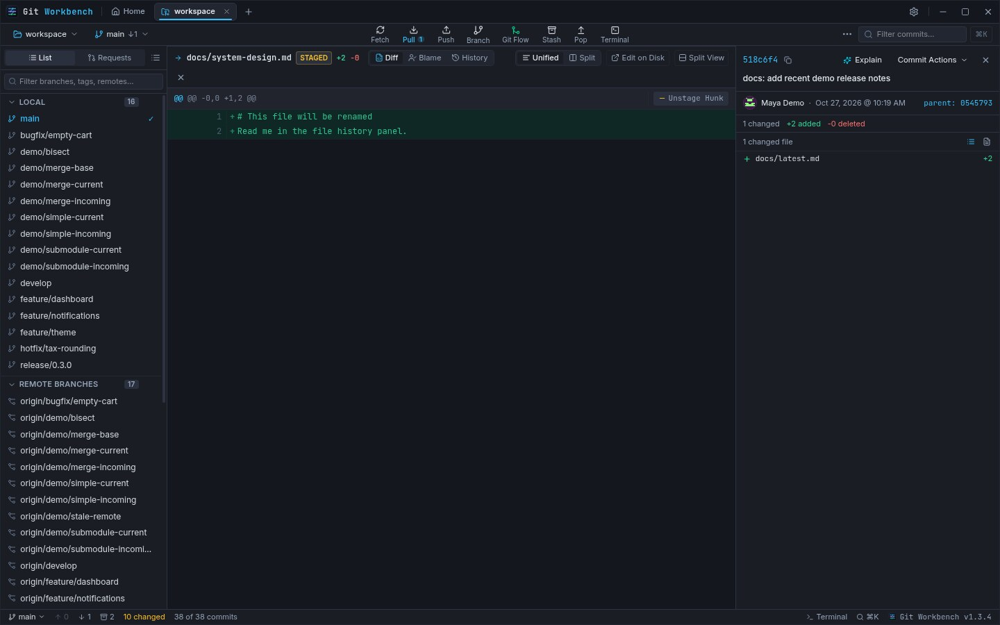
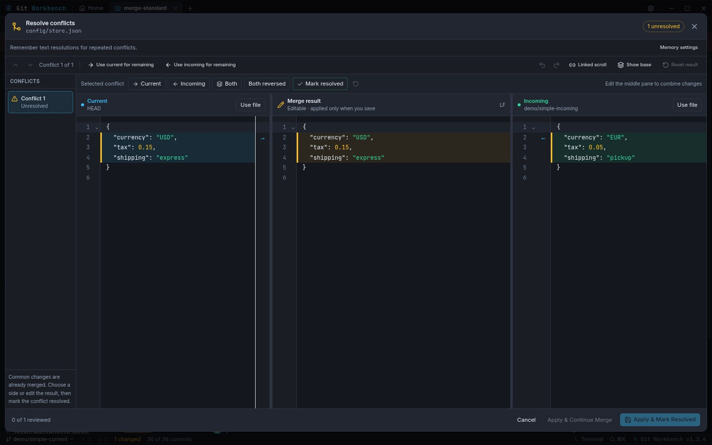

A graph-first Git workspace
Read branches, tags, and commit history together. Select a commit to see its files, author, date, and patch in context.
Resizable columns · Search · BlameOPEN-SOURCE DESKTOP GIT CLIENT
Follow branches in a visual commit graph, inspect changes before they land, and move from local work to code review without losing context.
Free & open source · Linux, macOS & Windows · Uses your system Git

History you can read. Follow branch lanes, compare refs, and inspect a commit without leaving the graph.
01 / 03
Make the commit yours. Review a real patch, then stage just the files, hunks, or lines you intend to include.
02 / 03
Resolve with the full context. Compare Current and Incoming beside an editable result, then review before applying.
03 / 03Screenshots captured directly from the desktop app using fictional demo repositories and identities. No customer repositories or credentials are shown. Click an image to view it full size.
FROM FIRST COMMIT TO FINAL REVIEW
Stay close to your code, see what Git is doing, and choose the next action with context.
Read branches, tags, and commit history together. Select a commit to see its files, author, date, and patch in context.
Resizable columns · Search · BlameInspect unified or split diffs, then stage only the files, hunks, or lines that belong in the next commit.
Working tree · Partial staging · File historyCompare Current and Incoming beside an editable result. Review each block and apply only when you are satisfied.
Three-pane editor · Base view · Restore pointBrowse requests, inspect conversations and checks, review diffs, and create requests from the checked-out branch.
GitHub · GitLab · Bitbucket Cloud · GiteaOpen worktrees, use reflog and restore points, and preview history rewrites before choosing to apply them.
Worktrees · Interactive rebase · BisectKeep an interactive terminal, optional AI assistance, keyboard shortcuts, and repository settings close to your work.
Terminal · AI drafts · ThemesWHY GIT WORKBENCH
Many Git clients put history, file changes, terminals, and code review in separate places. Git Workbench brings those parts together around a visual commit graph, so you can trace a change from branch to patch to review.
Explore the open-source projectKeep branch relationships and commit details visible while you inspect a patch or plan a history change.
Choose individual lines and hunks, then see exactly what is staged before creating a commit.
Use local Git without signing in. Connect a hosted provider or AI model only when you want those features.
FROM FIRST LAUNCH TO FIRST REVIEW
Choose the commit profile and theme you want. AI setup is optional, and every choice can be changed later.
Open an existing project or create a repository. Git Workbench uses system Git and your configured SSH keys or credential helper.
Follow branches, select a commit, inspect its files, and compare the working tree with the history around it.
Stage a file, hunk, or line; review the staged patch; write a commit; then fetch, pull, or push when ready.
Connect a provider to browse or create pull requests and merge requests. Provider access stays optional for local Git work.
FREE DOWNLOADS FOR YOUR DESKTOP
Checking the latest public release…
Choose the package that fits.
Debian / Ubuntu, Fedora / RPM, Arch, or a portable AppImage.
Apple silicon & Intel.
Universal build
Download for macOSmacOS builds are unsigned. Installation and updates are manual; review the release instructions.
A familiar desktop installer.
Intel / AMD 64-bit
Download for WindowsInstall system Git before opening your first repository.
Yes. Git Workbench is open source under the MIT license. You can inspect the code, report issues, and contribute on GitHub.
Git Workbench uses your installed system Git and standard repositories. Pushes and pulls use your configured SSH keys or Git credential helper. Provider sign-in separately authorizes hosted pull request APIs.
GitHub, GitLab.com, self-hosted GitLab, Bitbucket Cloud, and Gitea are supported for pull request and merge request workflows. Add provider credentials in Settings → Pull Request Providers. GitHub Enterprise and Bitbucket Data Center are not supported yet.
AI assistance is optional. Local Git features do not need an AI account. When you request AI help, the relevant prompt or selected code is sent to the model provider you configured; review that provider's policies before use.
Install system Git and make sure it is available on your PATH. Git Workbench uses your usual SSH keys and credential helper for Git operations. Provider login and AI configuration are optional.
Linux AppImage, deb, rpm, and Pacman packages and the Windows installer support explicit in-app updates. Unsigned macOS builds are downloaded and installed manually from the release page.
Yes. Git Workbench provides a universal DMG and ZIP for Intel and Apple silicon. macOS warns that the app is unsigned; installation and updates are manual. Review the current release notes for platform-specific instructions.
BUILT IN THE OPEN
Git Workbench is MIT-licensed and developed in public. Read the source, report an issue, or suggest what should improve next.